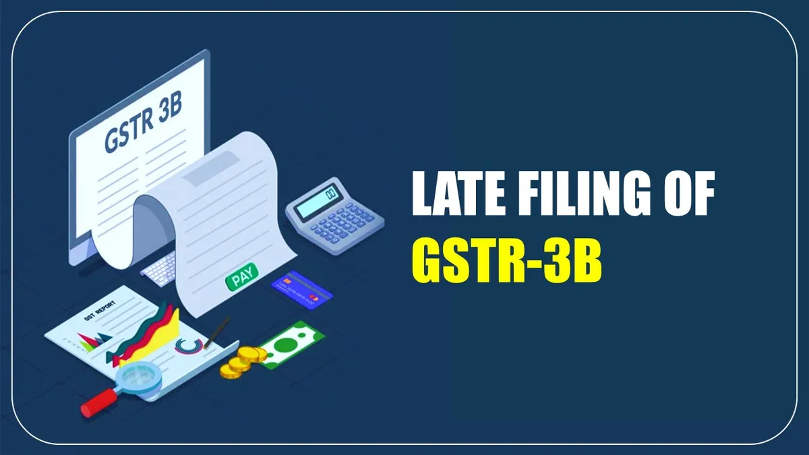

Understanding GST Late Filing Fee: Rules, Calculation, and Exemptions
Goods and Services Tax (GST) is a comprehensive indirect tax system implemented across India, requiring regular filing of returns by registered businesses. While timely compliance is essential, many businesses sometimes face situations where they cannot file their GST returns by the due dates. In such cases, late filing fees are imposed as per the GST law.
This comprehensive guide aims to provide you with a clear understanding of GST late filing fees, including the applicable rules, calculation methods, and potential exemptions or waivers available under various circumstances.
Why This Guide Matters
Understanding the late filing fee structure is crucial for all GST-registered businesses. This knowledge can help you manage your tax obligations effectively, avoid unnecessary penalties, and take advantage of available exemptions when applicable.
Basics of GST Return Filing
Before delving into the late filing fees, it's important to understand the basic GST return filing requirements:
Types of GST Returns
Different types of returns need to be filed by GST-registered businesses based on their category and transaction types, including GSTR-1, GSTR-3B, GSTR-4, GSTR-5, GSTR-6, GSTR-7, and GSTR-9.
Filing Frequency
Returns may need to be filed monthly, quarterly, or annually depending on the type of return and the business category.
Due Dates
Each return type has specific due dates prescribed by the GST authorities, which must be adhered to for compliance.
Nil Returns
Even if there are no transactions during a period, filing a "Nil Return" is mandatory for GST-registered entities.
Failure to file any of these returns by the specified due dates results in late filing fees as prescribed under Section 47 of the CGST Act, 2017.
Legal Provisions for GST Late Filing Fee
The late filing fee for GST returns is governed by specific legal provisions under the GST law:
| Legal Reference | Provision |
|---|---|
| Section 47(1) | Specifies the late fee for failing to file returns by the due date. |
| Rule 67 | Outlines the form and manner of payment of late fees. |
| Section 128 | Provides power to the government to waive penalty or late fee. |
| Notifications | Various notifications issued from time to time specifying concessions or waivers in late fees. |
Important Note
The GST Council periodically reviews and may revise the late fee structure. It's advisable to check the latest notifications from the GST Council for any updates to these provisions.
Calculation of GST Late Filing Fee
The late filing fee for GST returns is structured as follows:
- Standard Late Fee: As per Section 47 of the CGST Act, the late fee is ₹100 per day under CGST and ₹100 per day under SGST (total ₹200 per day).
- Maximum Cap: The maximum late fee is capped at ₹5,000 (₹2,500 under CGST and ₹2,500 under SGST).
- Nil Returns: For nil returns (where there's no tax liability), the late fee is typically lower, often capped at ₹500 (₹250 under CGST and ₹250 under SGST).
- Special Provisions: For specific returns like Annual Returns (GSTR-9), different late fee structures may apply.
Calculation Example
If a regular taxpayer files GSTR-3B with a 20-day delay and has a tax liability:
Late Fee = ₹100 (CGST) + ₹100 (SGST) = ₹200 per day
Total Late Fee = ₹200 × 20 days = ₹4,000
However, if the government has issued a notification capping or reducing the late fee for that period, the lower amount would apply.
Return-wise Late Filing Fee Structure
The late filing fee varies depending on the type of GST return:
| Return Type | Standard Late Fee | Nil Return Late Fee |
|---|---|---|
| GSTR-1 | ₹200 per day (max ₹5,000) | ₹200 per day (max ₹5,000) |
| GSTR-3B | ₹200 per day (max ₹5,000) | ₹500 maximum (as per current notifications) |
| GSTR-4 (Composition) | ₹200 per day (max ₹5,000) | ₹500 maximum (as per current notifications) |
| GSTR-9 (Annual) | ₹200 per day (max ₹5,000) | ₹500 maximum (as per current notifications) |
| GSTR-7 (TDS) | ₹200 per day (max ₹5,000) | ₹500 maximum (as per current notifications) |
Dynamic Structure
The GST Council frequently issues notifications to provide relief by reducing late fees, especially during challenging economic periods. Always check the latest notifications for the current applicable rates.
Late Filing Fee Exemptions and Waivers
The government has provided various exemptions and waivers for GST late filing fees under different circumstances:
Complete Waivers
In some situations, especially during the initial implementation of GST or during crises like the COVID-19 pandemic, the government has provided complete waivers of late fees for specific periods.
Conditional Waivers
The government sometimes announces conditional waivers where late fees are waived if returns are filed within a specified amnesty period.
Partial Reductions
In many cases, the government reduces the maximum cap on late fees rather than providing a complete waiver, especially for returns with nil tax liability.
Technical Glitch Exemptions
If delays in filing are caused by technical glitches on the GST portal, taxpayers can seek exemption from late fees by providing evidence of the technical issues.
Exemption Communication
Exemptions or waivers are communicated through official notifications issued by the Central Board of Indirect Taxes and Customs (CBIC) or the respective State GST departments. Always refer to the official notifications for accurate information.
Historic Late Fee Waivers and Reductions
Over the years, the GST Council has announced various late fee waivers and reductions, some of which include:
| Period/Situation | Waiver/Reduction Details |
|---|---|
| COVID-19 Pandemic | Complete waiver or significant reduction in late fees for several months during 2020-2021. |
| Initial GST Period | Waivers for returns pertaining to July 2017-September 2018, the initial implementation phase of GST. |
| Amnesty Schemes | Periodic amnesty schemes allowing filing of pending returns with reduced or zero late fees. |
| Small Taxpayers | Special reductions for taxpayers with annual turnover below specified thresholds. |
These historical patterns suggest that the GST Council considers economic conditions and taxpayer difficulties when determining late fee policies.
Impact of Late Filing on Businesses
Beyond the financial cost of late fees, delayed GST return filing can have several other impacts on businesses:
-
Input Tax Credit Issues
Delayed filing may affect the ability to claim Input Tax Credit (ITC) in a timely manner, leading to potential cash flow problems.
-
Compliance Rating Impact
GST compliance rating can be affected by late filings, potentially impacting the business reputation and B2B relationships.
-
Interest Liability
Apart from late fees, interest on delayed tax payment (currently 18% per annum) continues to accrue, increasing the financial burden.
-
Audit Triggers
Consistent late filing might trigger GST audits or scrutiny notices, leading to additional compliance requirements.
-
Business Operations
For e-commerce suppliers and certain other categories, continued non-compliance might affect the ability to operate on platforms or with business partners.
Cumulative Effect
The combined impact of late fees, interest, potential ITC issues, and compliance concerns can significantly affect business operations and financial health, especially for small and medium enterprises.
Common Challenges and Solutions
Businesses face various challenges when dealing with GST return filing. Here are some common issues and potential solutions:
Data Reconciliation Issues
Challenge: Mismatches between purchase records and vendor-reported data often delay filing.
Solution: Implement regular GSTR-2B vs. purchase register reconciliation processes. Use automated tools for large volumes of transactions.
Technical Glitches
Challenge: Portal errors or technical issues sometimes prevent timely filing.
Solution: Document all technical issues with screenshots. File grievances with the GST helpdesk and retain acknowledgment for seeking late fee waiver.
Resource Constraints
Challenge: Small businesses often lack dedicated tax personnel.
Solution: Consider outsourcing GST compliance to professionals or investing in automated GST software solutions.
Multiple Registrations
Challenge: Managing compliance for businesses with multiple state registrations.
Solution: Centralize GST compliance with clear responsibilities and calendar alerts for different state filings.
Cash Flow Issues
Challenge: Inability to pay tax liability causing delayed filing.
Solution: Consider filing returns even if full payment isn't possible, as this might reduce late fees. Explore short-term financing options for tax payments.
Best Practices to Avoid Late Filing Fees
Implement these best practices to ensure timely GST compliance and avoid late filing fees:
- Create a GST Compliance Calendar: Maintain a detailed calendar with all filing due dates, incorporating adequate preparation time.
- Implement Regular Reconciliation: Reconcile purchase and sales data well before filing deadlines to address discrepancies early.
- Use Automated Solutions: Invest in GST compliance software that automates data extraction, validation, and filing processes.
- Set Up Reminders: Establish multiple reminder systems for approaching due dates at both team and management levels.
- Maintain Updated Master Data: Ensure all vendor and customer GST details are regularly updated to prevent last-minute issues.
- Designate Backup Personnel: Train multiple team members on GST filing processes to handle absences or emergencies.
- File Early: Aim to file returns a few days before deadlines to allow buffer time for unexpected issues.
- Regular GST Updates: Stay informed about the latest notifications and changes to the GST filing requirements and deadlines.
Professional Assistance
For businesses struggling with regular compliance, engaging a professional GST consultant or tax advisory service can be a cost-effective way to ensure timely compliance and avoid penalties.
Need Expert GST Compliance Assistance?
Our team of tax professionals specializes in GST compliance and can help you navigate the complexities of GST return filing, ensuring timely submission and minimizing late fees.
Recent Updates and Notifications
The GST Council frequently updates rules and provisions regarding late fees. Here are some notable recent developments:
The GST Council has implemented a rationalized late fee structure with lower caps for small taxpayers and nil returns.
Small taxpayers can now opt for quarterly return filing (QRMP scheme), reducing the frequency of compliance and potential late fees.
Special notifications for one-time waivers or reductions in late fees for specific periods are announced periodically.
The GST Council is working on simplifying the return filing process to improve compliance and reduce the incidence of late filing.
Frequently Asked Questions
No, the GST portal does not provide an option to pay late fees in installments. The entire amount must be paid along with the filing of the delayed return.
Yes, late fees apply even for nil returns where there is no tax liability. However, the maximum amount is typically capped at a lower level (currently ₹500) for nil returns.
No, late filing fees are not eligible for Input Tax Credit under GST regulations. These are considered as penalties and not as input services.
Late fees are calculated separately for each GST registration (GSTIN). If you have registrations in multiple states, late fees will apply independently to each registration's delayed returns.
Individual waiver requests are not typically entertained. Waivers are announced by the GST Council through notifications that apply to all eligible taxpayers. However, if the delay was due to technical glitches on the GST portal, you can file a grievance for consideration.
Consistent late filing may be considered a compliance risk factor and could potentially increase the likelihood of being selected for GST audit or scrutiny. However, it is just one of many factors considered in the audit selection process.
Conclusion
Understanding GST late filing fees is essential for all businesses registered under GST. While the system imposes penalties to ensure timely compliance, it also provides reasonable accommodations through caps, waivers, and reductions under various circumstances.
The best approach is to establish robust compliance processes that ensure timely filing, but when delays are unavoidable, knowing the exact implications helps in managing the financial impact effectively. Always stay updated with the latest notifications from the GST Council regarding changes in late fee provisions.
Remember that GST compliance goes beyond avoiding penalties—it's about contributing to the nation's tax system efficiently while maintaining good business practices. By staying informed and implementing proper processes, you can minimize late fees and focus on growing your business.
Final Tip
Consider setting your internal filing deadlines at least 5-7 days before the actual due dates. This buffer provides ample time to resolve any unexpected issues without incurring late fees.